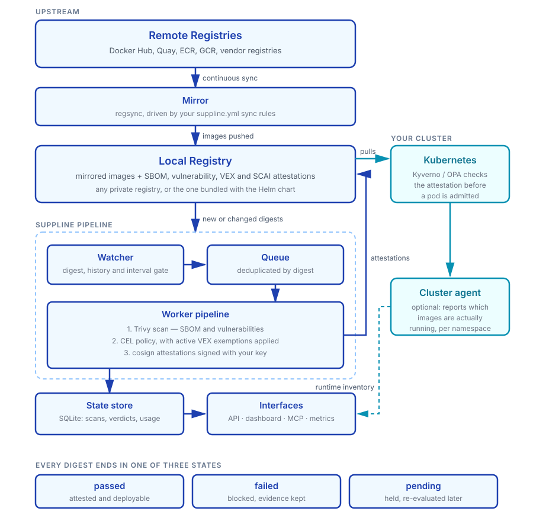

Continuous Mirroring
Keep third-party images in your own registry with regsync, so upstream outages, rate limits and deleted tags stop breaking deploys.
Self-hosted image intake gateway for Kubernetes
Your cluster runs dozens of third-party images you didn't build — each one a pull from someone else's registry, on someone else's uptime, with a CVE list nobody has reviewed since the day it was deployed. suppline is the gate in front of that.
Used in production at SocialHub
Used in production
“Before suppline, every third-party image meant another glue script — mirror here, scan there, hope admission catches up. Now we have one gate: our registry, our policy, signed attestations. Clusters only run what passed.”
SocialHub runs suppline as the intake gate for third-party images — continuous mirror → Trivy scan → CEL policy → Sigstore attestations, with cluster admission verifying the verdict.
suppline continuously mirrors upstream images into your registry, scans every digest, evaluates a policy you wrote, and publishes signed attestations. Clusters then pull only from the mirror — and can refuse to run anything without a valid, fresh attestation.
Your suppline.yml sync rules drive regsync, which keeps your registry in step with the upstream repositories you chose.
The watcher spots new or changed digests and enqueues them. Trivy produces an SBOM and the vulnerability set.
Active VEX exemptions are applied, then your CEL policy decides: passed, failed, or pending.
cosign signs SBOM, vulnerability, VEX and SCAI attestations into the registry, right next to the image.
Your cluster pulls from the mirror, and Kyverno or OPA verifies the attestation before a pod starts.
Unchanged digests are rescanned on an interval, so an image that was clean last month gets re-judged against today's vulnerability data. See the full image lifecycle
Keep third-party images in your own registry with regsync, so upstream outages, rate limits and deleted tags stop breaking deploys.
Trivy scans every digest and generates an SBOM. Smart rescanning reacts to digest changes and configurable intervals.
Express your gate as a CEL expression, with per-repository overrides and an optional hold on images that are too freshly released to trust.
Exempt a CVE with a state, justification and an expiry date, so accepted risks resurface for review instead of living forever.
cosign signs SBOM, vulnerability, VEX and SCAI attestations with your own key — and suppline generates the matching Kyverno policy for you.
An optional cluster agent reports which images are actually running, so you can tell a backlog item from a live incident.
Query scans, vulnerabilities, repositories and VEX state, trigger rescans, or re-evaluate policy — from the UI or straight over HTTP.
Point an LLM client at suppline and ask in plain language which deployed images fail policy, or whether any VEX statements have expired.
SQLite keeps every scan, verdict and exemption, so you can show what was known about an image at the moment it was admitted.
Prometheus metrics, structured JSON logs and component health checks, including how many failing images are live in your clusters.
No external service is required at runtime. Mirror once, then scan, gate and attest entirely inside an isolated network.
Clusters pull from your registry, not from a vendor's. An upstream outage or a rate limit is no longer your outage.
Not once at onboarding. Digests are rescanned on an interval, and new upstream tags enter the same gate automatically.
A CEL expression in version control beats a wiki page. Exemptions carry a justification and an expiry date.
Admission control verifies a signed attestation, so the gate keeps working even when suppline itself is down.
Which images fail policy, which of those are running in production, and what was known at the time — all in your own database.
Mirror once and deploy into isolated networks, while cutting repeated egress traffic to public registries.



suppline.yml into your registryOne Go binary runs the watcher, queue, workers and API. The only required companions are a Trivy server and your registry.
Mirroring rules and security policy live in one file, so what you mirror and what you allow are reviewed together. Vulnerability counts exclude anything an active VEX statement exempts.
suppline.ymldefaults:
x-rescanInterval: 7d
x-policy:
expression: "criticalCount == 0"
failureMessage: "critical vulnerabilities found"
sync:
- source: nginx
target: myregistry.com/nginx
type: repository
x-policy:
expression: "criticalCount == 0 && highCount <= 5"
minimumReleaseAge: "72h"
x-vex:
- id: CVE-2024-56171
state: not_affected
justification: vulnerable_code_not_present
detail: "Not reachable in our configuration"
expires_at: 2026-12-31T23:59:59Z
minimumReleaseAge holds brand-new images as pending until they have
been public long enough to trust — useful when an upstream release is compromised and
pulled within hours.
curl -s localhost:8080/api/v1/integration/kyverno/policy \
> suppline-policy.yaml
kubectl apply -f suppline-policy.yaml
The generated ClusterPolicy admits a pod only when the SCAI attestation is
signed by your key, reports a passing scan status, and has not expired — a stale verdict
fails closed. It ships in Audit mode so you can watch before you block.
expression: |
vulnerabilities.filter(v,
v.severity == "CRITICAL" &&
v.fixedVersion != "" &&
!v.exempted
).size() == 0
Available variables include criticalCount, highCount,
mediumCount, lowCount, exemptedCount,
vulnerabilities and imageRef.
No credentials required. Bundled throwaway registry, demo pass + fail policies, and auto-generated cosign keys. Watch one image pass (with attestations) and one fail.
First boot pulls images and Trivy’s DB — give it a few minutes.
git clone https://github.com/daimoniac/suppline.git && cd suppline
docker compose up --build -dGo to http://localhost:3000 and log in with API key demo.
Wait until repositories demo-pass and demo-fail appear.
demo-pass should be policy-passed with attestations;
demo-fail should be blocked.
curl -s http://localhost:8081/health
curl -s -H "Authorization: Bearer demo" \
http://localhost:8080/api/v1/scans | headFull checklist (semver, VEX, attestation gate POC): Eval quick start . Production installs use Helm with your own registry — REGISTRY.md .
Full eval checklist